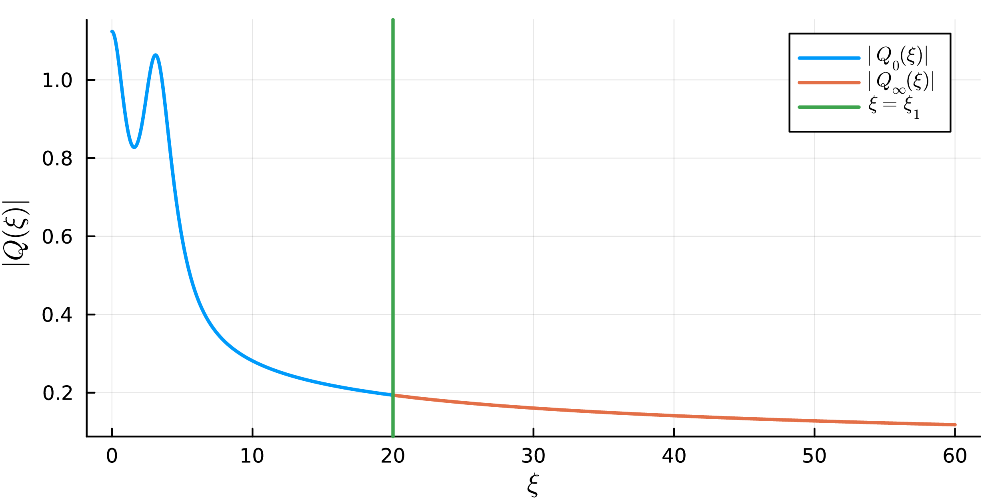

Week 10 Lecture 2: Self-similar blowup
In this lecture we will take a look at the paper Self-Similar Singular Solutions to the Nonlinear Schrödinger and the Complex Ginzburg-Landau Equations. The focus will be on the proof and the computer-assisted approach; we will only briefly discuss the history of the problem.
Background
We are interested in the complex Ginzburg-Landau (CGL) equation. It is given by
\[i \frac{\partial u}{\partial t} + (1 - i\epsilon)\Delta u + (1 + i\delta)|u|^{2\sigma}u = 0 \text{ in }\mathbb{R}^{d} \times (0, T),\]
for non-negative parameters $\epsilon$, $\delta$ and $\sigma$. For $\epsilon = 0$ and $\delta = 0$ it reduces to the more well known nonlinear Schrödinger (NLS) equation. In particular, for $\sigma = 1$ we get the cubic NLS equation
\[i \frac{\partial u}{\partial t} + \Delta u + |u|^{2}u = 0.\]
The parameters considered in the paper are $\delta = 0$ and $\epsilon > 0$. In our discussions here we will in some cases further specialize to $\epsilon = 0$, $\sigma = 1$ and $d = 3$ (the 3D cubic NLS equation), which simplifies some of the technical details.
We are interested in radial (backward) self-similar solutions. These are solutions of the form
\[u(x, t) = \dfrac{1}{(2\kappa(T - t))^{\frac{1}{2}\left(\frac{1}{\sigma} + i \frac{\omega}{\kappa}\right)}} Q\left(\dfrac{|x|}{(2\kappa(T - t))^{\frac{1}{2}}}\right),\]
for some real valued parameters $\kappa$ and $\omega$. Inserting this ansatz into the CGL equation we get that $Q$ should satisfy the ODE
\[(1 - i\epsilon)\left(Q'' + \frac{d - 1}{\xi}Q'\right) + i\kappa\xi Q' + i \frac{\kappa}{\sigma}Q - \omega Q + (1 + i\delta)|Q|^{2\sigma}Q = 0\]
For $Q$ to give a smooth radial solution we have the boundary condition $Q'(0) = 0$. For the solution to have finite energy we will also need the condition that $Q(\xi) \sim \xi^{-\frac{1}{\sigma} - i\frac{\omega}{\kappa}}$ as $\xi \to \infty$, we will get back to where this comes from. Due to a scaling symmetry between $\kappa$ and $\omega$, we are free to fix $\omega = 1$. In general we will, however, still keep $\omega$ in the expressions.
In general, for arbitrary values of $\kappa$ (and $\omega = 1$), this boundary value problem will not have solutions. Only for a discrete set of values do solutions exist. The existence of (some of) these solutions is what we want to prove.
From now on, we will forget everything about the CGL equation, the NLS equation and self-similar solutions. Our only goal is to prove the existence of $\kappa$ values such that the above ODE have solutions satisfying the boundary conditions at zero and infinity.
A rigorous shooting method
To prove the existence of a solution we will apply what in numerical analysis is called the shooting method. We will look at two solutions, one shooting out from zero and one shooting out from infinity. We will then look for $\kappa$ so that these two solutions match at some intermediate point, forming a global solution.
The idea is visualized in the figure below. Here $Q_0$ is the solution shooting out from zero and $Q_\infty$ is the solution shooting out from infinity. The matching point, $\xi_1$, is marked by the green line. Matching the solutions means that they should agree at the point $\xi_1$.

The plot above is for a different set of parameters than the one we will focus on here. The approach is the same though.
The solution $Q_0$ is the unique solution to the initial value problem
\[\begin{split} (1 - i\epsilon)\left(Q_{0}'' + \frac{d - 1}{\xi}Q_{0}'\right) + i\kappa\xi Q_{0}' + i \frac{\kappa}{\sigma}Q_{0} - \omega Q_{0} + (1 + i\delta)|Q_{0}|^{2\sigma}Q_{0} &= 0,\\ Q_{0}(0) &= \mu,\\ Q_{0}'(0) &= 0. \end{split}\]
Here $\mu$ is a parameter that we are free to vary, any value of $\mu$ will give us a solution satisfying the right boundary condition at zero. For symmetry reasons we can take $\mu$ to be real and positive. If we also include the solution's dependence on $\kappa$, this gives us a two-parameter family of solutions. We will use the notation $Q_0(\xi) = Q_0(\mu, \kappa; \xi)$ to explicitly denote this dependence.
The solution $Q_\infty$ is determined by the condition $Q(\xi) \sim \xi^{-\frac{1}{\sigma} - i\frac{\omega}{\kappa}}$ as $\xi \to \infty$. In this case it is, however, not quite as straightforward to parametrize the solution. We will see later that there is a one-dimensional complex manifold of solutions satisfying this condition. We will parametrize this manifold by $\gamma \in \mathbb{C}$, which together with the solution's dependence on $\kappa$ gives us $Q_\infty(\xi) = Q_\infty(\gamma, \kappa; \xi)$.
Note that by construction, the solution $Q_0$ satisfies the required boundary condition at zero and the solution $Q_\infty$ satisfy the boundary condition at infinity. In general, neither $Q_0$ nor $Q_\infty$ will, however, satisfy both boundary conditions. Our goal is to find parameters $(\mu, \gamma, \kappa)$ so that these solutions can be glued together at some intermediate point $\xi_1$. They would then form a global solution satisfying both boundary conditions. What does it mean to glue them together? The condition we need is that they satisfy
\[\begin{cases} Q_0(\mu, \kappa; \xi_1) &= Q_\infty(\gamma, \kappa; \xi_1),\\ Q_0'(\mu, \kappa; \xi_1) &= Q_\infty'(\gamma, \kappa; \xi_1). \end{cases}\]
This condition means that $Q_0$ and $Q_\infty$ both are solutions to the same second order ODE and that they have the same initial conditions at the point $\xi_1$. It then follows by the existence and uniqueness theorem for ODEs that they are in fact the same solution and hence glue together.
To verify this gluing condition we introduce the function
\[G(\mu, \gamma, \kappa) = \left( Q_{0}(\mu, \kappa; \xi_{1}) - Q_{\infty}(\gamma, \kappa; \xi_{1}), Q_{0}'(\mu, \kappa; \xi_{1}) - Q_{\infty}'(\gamma, \kappa; \xi_{1}) \right) : \mathbb{R} \times \mathbb{C} \times \mathbb{R} \to \mathbb{C}^{2}.\]
By identifying (\mathbb{C}) with (\mathbb{R}^{2}) we can interpret (G) as a map from (\mathbb{R}^{4}) to (\mathbb{R}^{4}).
\[G(\mu, \operatorname{Re} \gamma, \operatorname{Im} \gamma, \kappa) :\mathbb{R}^{4} \to \mathbb{R}^{4}.\]
A matching of the solutions $Q_0$ and $Q_\infty$ corresponds to a zero of the function $G$. We have hence reduced the problem of finding a solution to the ODE satisfying both the boundary condition at zero and at infinity to proving the existence of a zero for this function.
To apply this method we need to discuss two things:
- How to isolate roots for functions of several variables.
- How to compute $G$ (and its derivatives) using interval arithmetic.
Isolating roots in $\mathbb{R}^d$
For proving the existence (and local uniqueness) of a zero of $G$ we will make use of a high dimensional version of the interval Newton method.
Recall that the one dimensional version of the interval Newton method is defined by the Newton operator
\[N(\bm{x}) = m - \frac{f(m)}{f'(\bm{x})}.\]
Here $\bm{x}$ is an interval and $m$ is a point (usually the midpoint) in the interval. The most important property of $N$ is that if $N(\bm{x}) \subseteq \bm{x}$, then the function $f$ has a unique root on the interval $\bm{x}$.
The generalization of the interval Newton method to higher dimensions only requires changing the derivative to the Jacobian. If $Df$ denotes the Jacobian of $f$, then the higher dimensional version of the Newton operator is
\[N(\bm{x}) = m - Df(\bm{x})^{-1}f(m),\]
where $\bm{x} = \bm{x}_1 \times \cdots \times \bm{x}_d$ is a box given by a Cartesian product of intervals and $m$ is (usually) the midpoint of this box. We then have the following result.
Assume that $N(\bm{x})$ is well-defined. If $N(\bm{x}) \subseteq \bm{x}$, then $\bm{x}$ contains exactly one zero of $f$.
Let us sketch a proof of this, starting with the existence of at least one root.
Let us start by noting that we can express the difference between the function at $x$ and at $m$ by
\[f(x) - f(m) = J(x)(x - m),\]
where
\[J(x) = \int_0^1 Df(m + t(x - m))\,dt.\]
The crucial observation is that $J(x) \in Df(\bm{x})$ for any $x \in \bm{x}$. This follows from the fact that $\bm{x}$ is convex, so the path of integration stays inside the box, and the inclusion $Df(m + t(x - m)) \in Df(\bm{x})$.
To prove the existence we will apply a fixed point theorem to the function
\[g(x) = m - J(x)^{-1}f(m).\]
Since $J(x) \subseteq Df(\bm{x})$ we have, by assumption,
\[g(x) = m - J(x)^{-1}f(m) \in m - Df(\bm{x})f(m) = N(\bm{x}) \subseteq \bm{x}\]
for any $x \in \bm{x}$. Hence, $g(\bm{x}) \subseteq \bm{x}$ and it follows by the Brouwer fixed point theorem that $g$ has at least one fixed point in $\bm{x}$.
What remains is proving that this fixed point is a zero of $f$. If we denote the fixed point by $x_0$, then
\[x_0 = m - J(x_0)^{-1}f(m).\]
Which we can rewrite as
\[J(x_0)(x_0 - m) = -f(m).\]
Inserting this into $f(x) - f(m) = J(x)(x - m)$ we get
\[f(x_0) - f(m) = -f(m) \iff f(x_0) = 0.\]
The uniqueness follows from the following, slightly more general, theorem.
If the interval matrix $Df(\bm{x})$ is invertible, then $f$ has at most one zero in the box $\bm{x}$.
Suppose we have two roots, $x_0$ and $x_1$, and consider the line segment joining them. The proof is based on a multivariable version of the mean value theorem, namely that
\[f(x_0) - f(x_1) = J (x_1 - x_0)\]
where $J$ is the matrix
\[J = \begin{pmatrix} \nabla f_1(c_1)\\ \nabla f_2(c_2)\\ \vdots \\ \nabla f_d(c_d) \end{pmatrix},\]
with the points $c_i$ lying on the line segment between $x_0$ and $x_1$.
By assumption we have $f(x_0) = 0$ and $f(x_1) = 0$, hence this gives us
\[J (x_1 - x_0) = 0.\]
The result would therefore follow if we can show that $J$ is invertible, since in that case we get $x_1 - x_0 = 0$ and hence $x_0 = x_1$. Since $\bm{x}$ is convex, the line segment between $x_0$ and $x_1$ lies fully inside the box. Each row of $J$ will therefore be contained in the corresponding row of $Df(\bm{x})$. Since $Df(\bm{x})$ is invertible by assumption, it follows that $J$ is also invertible.
The proof of the multivariable version of the mean value theorem reduces to applying the mean value theorem separately to each component of $f$. The $c_i$ points come from each of these instances of applying the theorem.
Evaluating $G$
Recall that $G$ was given by
\[G(\mu, \gamma, \kappa) = \left( Q_{0}(\mu, \kappa; \xi_{1}) - Q_{\infty}(\gamma, \kappa; \xi_{1}), Q_{0}'(\mu, \kappa; \xi_{1}) - Q_{\infty}'(\gamma, \kappa; \xi_{1}) \right)\]
To apply the interval Newton method to $G$ we need to be able to compute interval enclosures of both $G$ as well as its Jacobian. This means we need to be able to compute enclosures of
- $Q_{0}(\mu, \kappa; \xi_{1})$
- $Q_{0}'(\mu, \kappa; \xi_{1})$
- $\partial_\mu Q_{0}(\mu, \kappa; \xi_{1})$
- $\partial_\mu Q_{0}'(\mu, \kappa; \xi_{1})$
- $\partial_\kappa Q_{0}(\mu, \kappa; \xi_{1})$
- $\partial_\kappa Q_{0}'(\mu, \kappa; \xi_{1})$
as well as
- $Q_{\infty}(\gamma, \kappa; \xi_{1})$
- $Q_{\infty}'(\gamma, \kappa; \xi_{1})$
- $\partial_\gamma Q_{\infty}(\gamma, \kappa; \xi_{1})$
- $\partial_\gamma Q_{\infty}'(\gamma, \kappa; \xi_{1})$
- $\partial_\kappa Q_{\infty}(\gamma, \kappa; \xi_{1})$
- $\partial_\kappa Q_{\infty}'(\gamma, \kappa; \xi_{1})$
We will look closer at how to do this during the next lab.